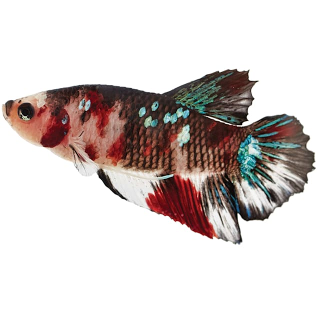
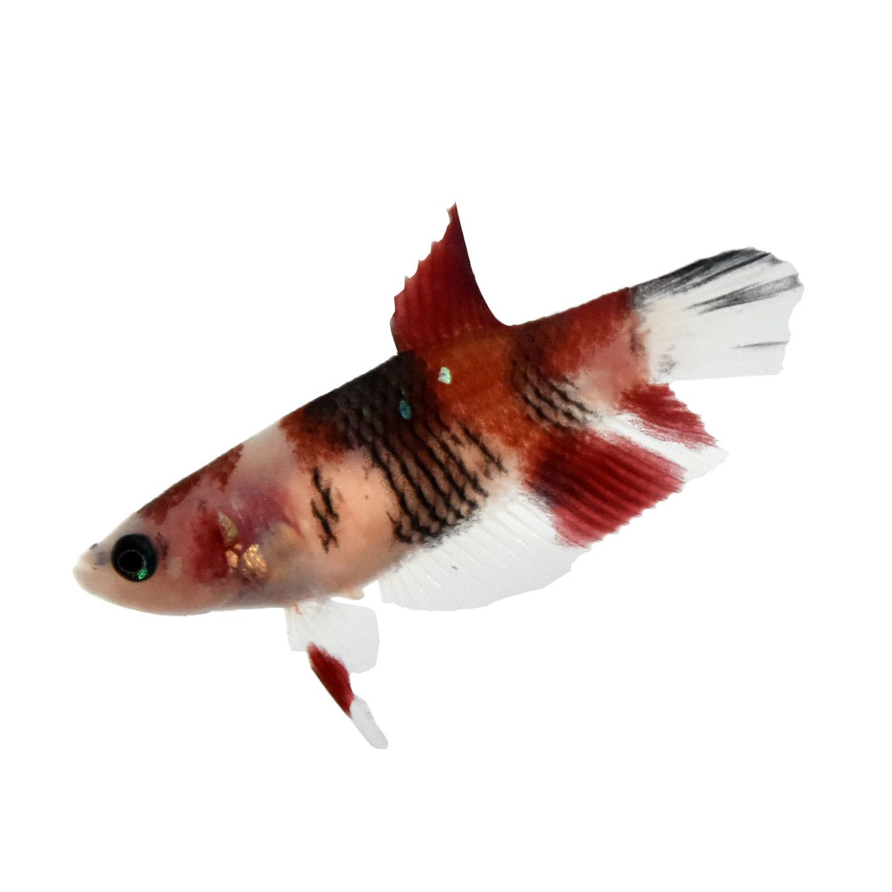
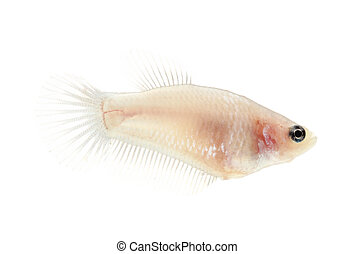

Kenny's Koi Bettas
Locally bred and raised
Betta Fish Care Guide
- Bettas are a tropical fish species native to Thailand that have been selectively bred for aggressiveness, colour, and finnage, resulting in an endless selection of beautiful variants.
- Basic care! Feed your bettas every 1-2 days and change their water out for fresh, dechlorinated water at least once a week.
- Give them enough space! In the wild, bettas live in large, expansive, but shallow rice paddies throughout Asia and are able to breathe air when water levels are low. Because of this, they can tolerate living in small amounts of water or oxygen-poor environments for short amounts of time. Pet bettas, however, are not subject to weather conditions and should be housed comfortably in adequately sized and heated aquariums!
- Keep them apart! Bettas are extremely territorial and will fight to the death if kept together. The only times bettas should be kept together are: temporarily while under optimal conditions for breeding (which is very likely to leave a fish injured and is only recommended for advanced keepers); or a sorority situation (non-aggressive females kept in ideal conditions with an abundance of hiding spaces).
Products

Male Koi Betta
Male bettas are generally larger than females, have longer fins and are much more aggressive. Male bettas are extremely territorial and should never be kept with other males, or kept with females short-term for the purpose of breeding. Otherwise, please house your male bettas SEPARATELY!

Female Koi Betta
Female bettas are smaller and generally have smaller fins while being less aggressive than males. In ideal (heavily planted, large aquariums with many hiding spots) conditions, a few may be kept together as a "sorority." Beware though as each individual fish is different, and fights may break out if individuals are incompatible!
